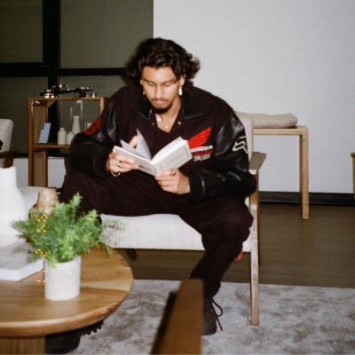

Editor.
Filmmaker.
Photographer.
“The notion of directing a film is the invention of critics — the whole eloquence of cinema is achieved in the editing room.”
Toronto-based editor working across unscripted television, commercial, documentary, branded content and short film. My work sits somewhere between instinct and precision, shaped by experience on both the creative and technical sides of post-production.
Whether I’m cutting a scene, building a workflow or solving a problem somewhere between the two, I care about the same thing: clarity, rhythm and making the final piece feel effortless. I've worked across broadcast and independent productions, with experience that runs from the first day of media through to final delivery.

Video Editing
Unscripted television, commercial, documentary, branded, and short-form work. Shaped around story, rhythm, and the moments that make a cut feel right.
Post Production
End-to-end post experience from ingest and media management through turnovers, conform, colour and delivery, with a strong technical background in Avid workflows and production systems.
Photography
Portrait and creative photography built around colour, composition and character. My job is to make you look good.